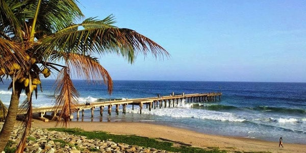

Andhra Toursims
.jpg)
Famous Places
To Visit in Nellore
Andhra Toursims
The Sri Ranganathaswamy Temple in Nellore, Andhra Pradesh, India is a Hindu temple dedicated to Lord Ranganatha, a resting form of Lord Vishnu. The temple is also called Talpagiri Ranganathaswamy temple or Ranganayakulu and is one of the oldest temples in Nellore. It is located on the banks of the Penna River and is believed to have been constructed in the 12th century. The temple has a huge tower called Gaali Gopuram, which means "wind tower" and is approximately 70 feet high with 10 feet of gold-plated vessels on top of it called kalashams. The gopuram was constructed by Yeragudipati Venkatachalam panthulu. The temple is of great religious significance and is visited by many devotees. Every year during the month of March–April, a grand festival called Brahmotsavam is celebrated
Udayagiri Fort is located in the town of Udayagiri in the Nellore district of Andhra Pradesh, India. The fort was constructed by Langula Gajapati, the chieftain to Gajapatis of Orissa, around the 14th century. Later, it came under the rule of Krishnadevaraya of Vijayanagara and then under the rule of Golconda chieftains. The fort was inaccessible on most sides and could only be penetrated by a jungle route. Therefore, it took months for Krishnadevaraya to siege the fort The fort is now in ruins and attracts thousands of tourists every year. The many structures of religious importance present on the hills add to the beauty of the place. The town of Udayagiri is also known for its stunning natural scenery, and its average elevation is 3079 ft. The town is located on the banks of the Penna River and is home to the Talpagiri Ranganathaswamy Temple, which is nearly 20 km away from the city buzz of Nellore.

Mypadu Beach is a popular tourist destination located on the East coast of the Bay of Bengal, at a distance of 25 km from SPSR Nellore district in Andhra Pradesh, India. The beach is maintained by the state tourism board, APTDC, and provides fishing opportunities for the local fishermen and access to cruises for the tourists. The beach is a perfect weekend getaway for the local people and offers clean waters, water sports activities, and beautiful landscapes to relax and rejuvenate. The best time to visit this beach is between the months of October to February when the climate is pleasant, and tides are low, offering an ideal time to reach this beach.In addition to the beach, Mypadu is also home to a historic temple and offers stargazing spots. The town of Nellore is known for its beaches, and among other beaches, Mypadu Beach, Kodur Beach, and Katepalli Beach are the most visited in the city and surrounding areas.

The Narasimha Swamy Temple in Nellore is dedicated to Lord Narasimha, an incarnation of Lord Vishnu. The temple is located on a small hill called Narasimha Konda, by the banks of the Penna River, about 15 km from Nellore. The temple is surrounded by the lush green forest or jungle of Vedagiri Hills. The temple is a Hindu pilgrimage center and is believed to have been originally established by the great Sage Kashyapa. The temple is also known as Vedagiri Lakshmi Narasimha Swamy Temple.Narsimha Varma in the ninth century. The temple is of great religious significance and attracts many devotees every year. The temple is also believed to be the site of an ancient temple dedicated to the God Narasimha. The temple is mentioned in the Vedic scripture ‘Brahma Purana,’ which reveals that the seven sages (Saptarishis) performed ‘yagnam’ (Sacrifice) on the top of Narasimhakonda
Pulicat Lake is a popular tourist destination located on the border of Andhra Pradesh and Tamil Nadu states in South India. The lake is the second largest brackish water lake in India and is famous for its wonderful flora and fauna. The lake is separated from the Bay of Bengal by a barrier island called Sriharikota Island. The lake is a natural habitat for birds and is home to many migratory birds, including flamingos, pelicans, and storks. The lake is also a popular spot for boating and fishing. The best time to visit Pulicat Lake is during November-March when the temperatures are suitable, and the chance of spotting the migratory birds is higher. The lake is around 80 kilometeres from Nellore.
These places are just few tourist attractions in and nearby nellore, there are many more you can find by yourself once you reach Nellore.